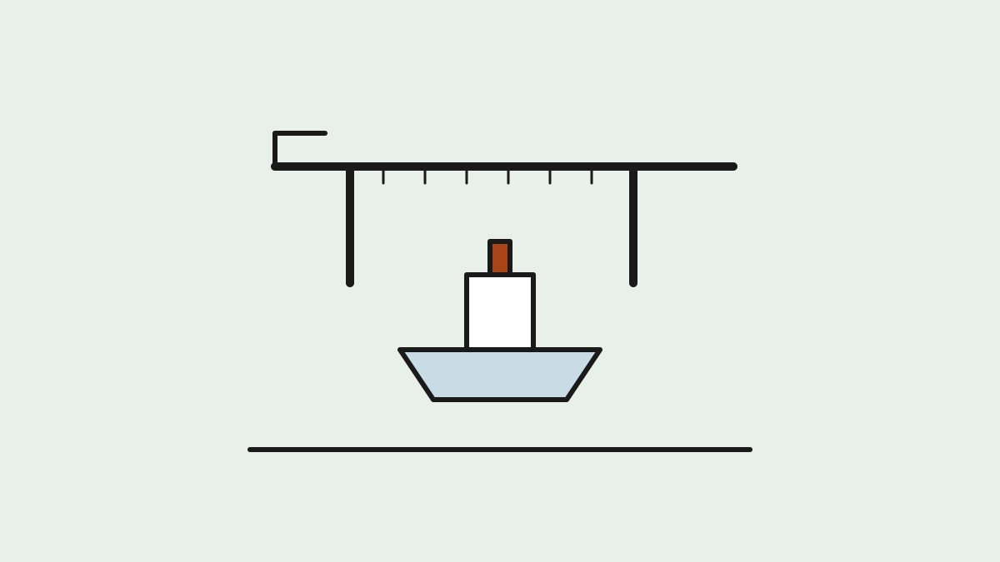
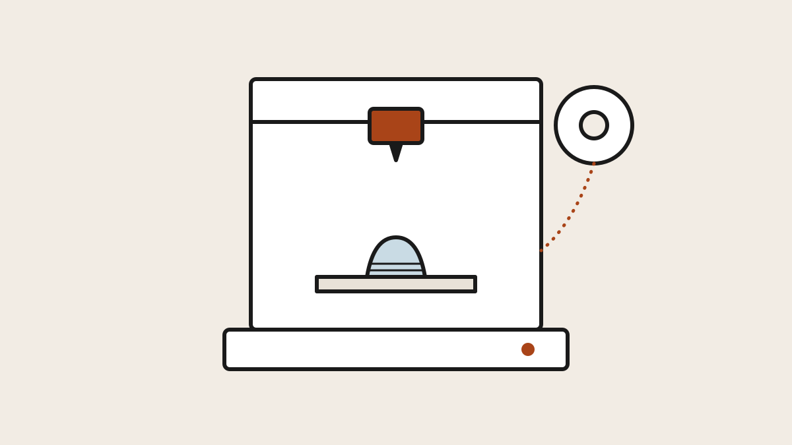
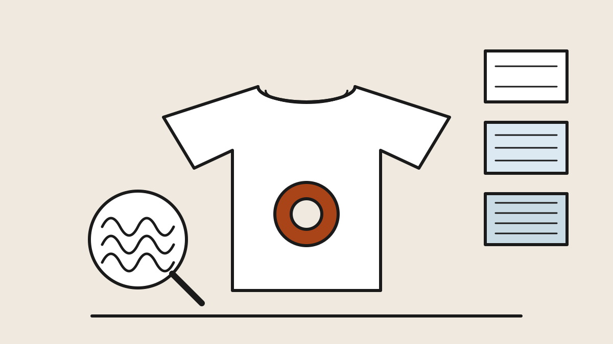

Methodology

How We Test
Every pick earns its place: the benchmarks, torture prints and scoring behind our recommendations.
We printed for two hundred hours across eight machines to find the printers worth your bench space — one pick for most people, one for tight budgets, and one for absolute beginners.

Methodology

Every pick earns its place: the benchmarks, torture prints and scoring behind our recommendations.
New section: Printed Tee Shirts

The blank is half the product. Fibers, weights and knits — and why fabric choice decides which printing methods are even possible.
About
Independent, periodically refreshed buying guides for DIY enthusiasts. No sponsored placements — every recommendation is dated, and we tell you when it was last checked against the market.